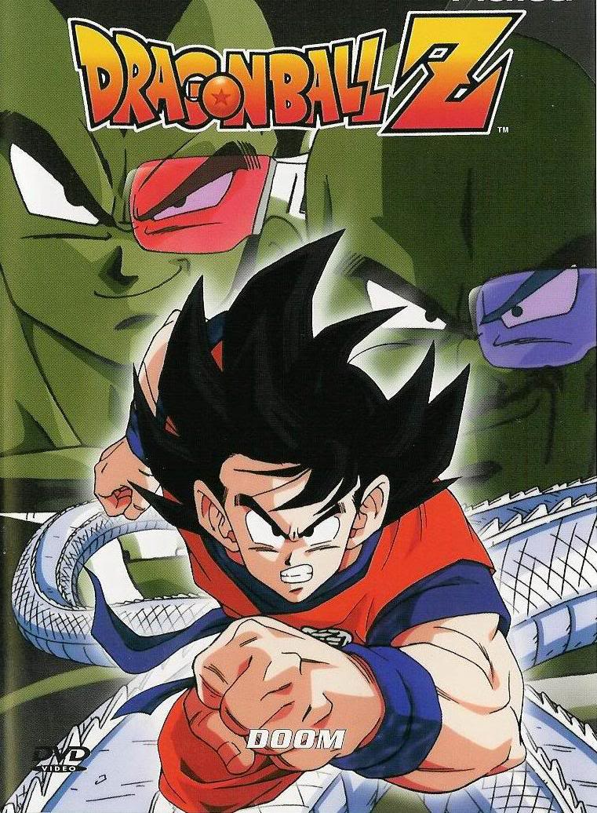
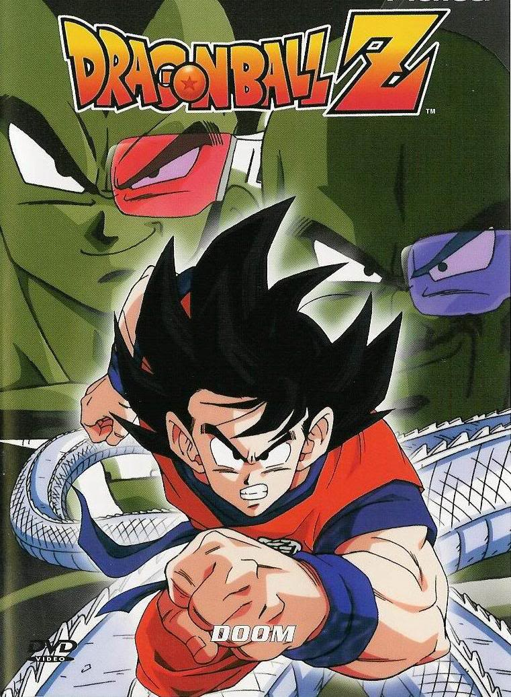

LILLIANA KOLLER

Summary
I have played piano for about ten years, and I also enjoy reading, sleeping, eating, anime, YouTube, and gaming. I was largely involved in CSF, Key Club, FFA, ASB, and the Academic Decathlon during high school.
I'm a terrible gamer, so I spend most of my time watching people like Markiplier and Jacksepticeye on YouTube. My favorite game is Undertale, but I also have a game I enjoy called Gmod (Garry's Mod).
I also like to make bad puns, and I am very good at drawing very bad doodles.
Hometown
University
I will be double majoring in CS and Classics in the college of Letters and Sciences.
Other Profiles
My Favorite Animes
Honestly, I can't really list all of them, because there's so much anime I have seen that I love,
and there's so much more that I haven't even seen yet. So here's a list of a few I enjoy.

 

My First Webpage
You can click on the link above to see my first webpage, which features a character named Caboose from the show Red vs Blue, by the company known as Rooster Teeth.